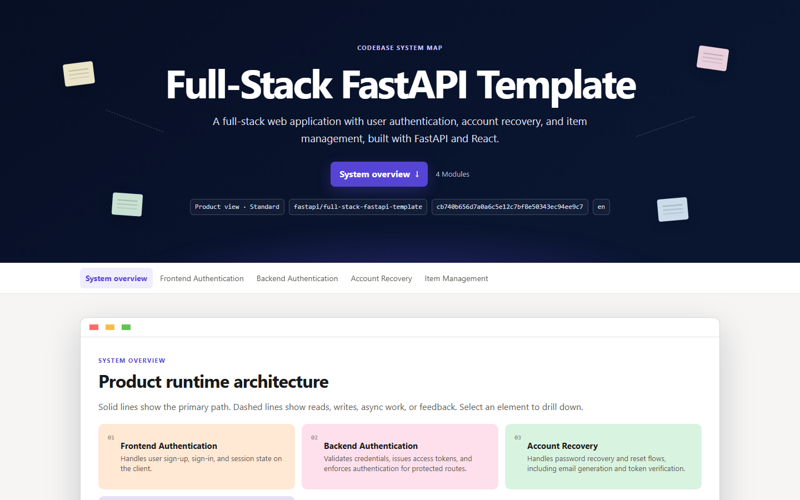
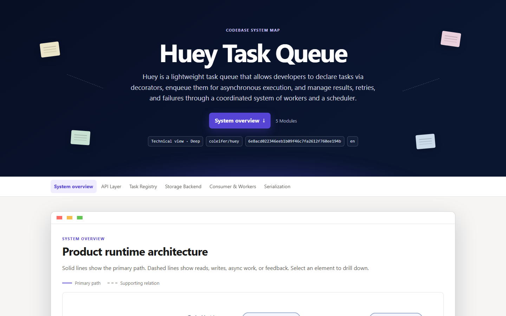
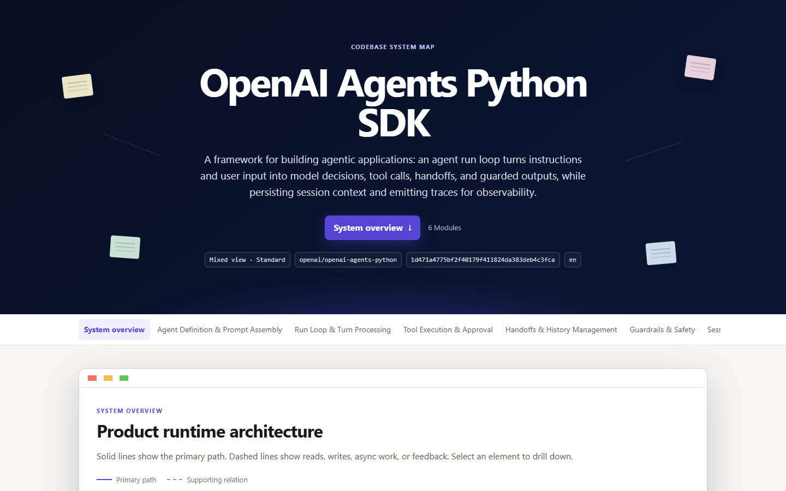

full-stack-fastapi-template.html

Product perspective · 4 modules
Full Stack FastAPI Template
Sign-up, sign-in, recovery, and owned items—without making the reader learn container, migration, or generated-client internals.
Best for: product managers, founders, and cross-functional planning.
PRODUCT16 NODES17 SOURCES

Technical perspective · 5 modules
Huey Task Queue
How declared tasks become queued work, how workers and the scheduler coordinate, and how retries, failures, and results move.
Best for: engineers onboarding to execution and state flow.
TECHNICAL16 NODES19 SOURCES

Mixed perspective · real prompt
OpenAI Agents Python SDK
The run loop, tools, handoffs, guardrails, sessions, tracing, and a real handoff prompt with exact source evidence.
Best for: product and engineering teams designing agent behavior together.
MIXED12 NODES1 PROMPT